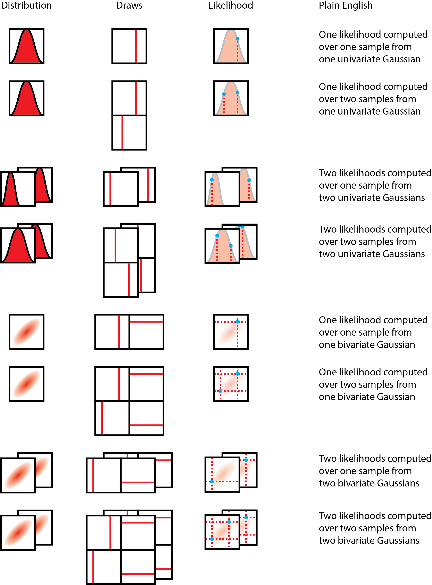

Reasoning about Shapes and Probability Distributions
bayesian probabilistic programming tensors data science probability distributions
I’m here with the PyMC4 dev team and Tensorflow Probability developers Rif, Brian and Chris in Google Montreal, and have found the time thus far to be an amazing learning opportunity.
Prior to this summit, it never dawned on me how interfacing tensors with probability distributions could be such a minefield of overloaded ideas and terminology. Yet, communicating clearly about tensors is important, because if problems can be cast into a tensor-space operation, vectorization can help speed up many operations that we wish to handle. I wanted to share a bit about something new about tensors that I learned here: the different types of shapes involved in a probabilistic programming language.
Let’s start by thinking about a few questions involving the most venerable distribution of them all: the Gaussian, also known as the Normal distribution.
Let’s start by thinking about a single draw from a standard Gaussian. Drawing one number from the standard Gaussian yields a scalar. In tensor space, a scalar is a rank 0 tensor, and this colloquially means that there’s no dimensions involved. If we drew out the distribution, and drew out the process of drawing numbers from the distribution, it might look like the following:

The distribution we are drawing from is on the left, and a draw is represented by a line (on the same numerical axis as the probability distribution), and the event shape, batch shape and sample shape shown to their right, followed by a "plain English" description. Over the course of this blog post, the shape concepts will be disambiguated; sit tight and enjoy the ride!
What if we were to draw two numbers from this one Gaussian? We could use a vector with two slots to represent those draws. This might look like the following:

However, the elementary event of drawing a single number did not fundamentally change when we drew two numbers, as we merely repeated the same event to draw two. With my hands waving in the air, I will claim that this holds true even with K samples drawn from the distribution.
Now, what if I had a second Gaussian, say, with a different mean and/or variance? If I were to draw one number from the first Gaussian alongside one number from the second Gaussian, and then concatenate them into a vector, we can represent this as us drawing numbers from independent Gaussians. The illustration below should help clarify how this is different from the first.

In this case, we may argue that per distribution, the elementary shape of the event did not change. However, since we have a batch of two distributions, this contributes to the final shape of the tensor. Again, with much waving of my hands in the air, this should extend to more than two distributions.
Now, what if we had a multivariate Gaussian, with two variates? This makes for a very interesting case! The elementary event drawn from this multivariate Gaussian is a two-element vector, not a scalar, which means that its shape is apparently identical to the case where we have a single pair of numbers drawn from a batch of two independent Gaussians! This looks like the following:

This is interesting, because a single draw from a bivariate Gaussian has the same overall shape as two draws from one Gaussian, which also has the same shape as one draw from a batch of two Gaussians. Yet, these apparently same-shaped draws are shaped differently semantically! In particular, the two independent Gaussians individually have elementary event shapes that are scalar, but when drawn as a batch of two, that is when their shape of (2,) forms. On the other hand, the multivariate Gaussian cannot have its two numbers drawn independent of one another (unless this is the special case of diagonal-only covariance - in which case, this is equivalent to independent Gaussians). Hence, the elementary event shape is not scalar, but vector (or more generally, same rank tensor as the mean tensor), but the batch has only a single distribution, hence it has a scalar batch shape.
To summarize, here are the various kinds of shapes, defined:
Event shape: The atomic shape of a single event/observation from the distribution (or batch of distributions of the same family).
Batch shape: The atomic shape of a single sample of observations from one or more distributions of the same family. As an example, we can’t have a batch of a Gaussian and a Gamma distribution together, but we can have a batch of more than one Gaussians.
Sample shape: The shape of a bunch of samples drawn from the distributions.
And finally, here’s the full spread of possibilities, using one or two draws, uni- or bi-variate Gaussians, and one or two batches of distributions as an illustration.

Special thanks goes to fellow PyMC devs, Ravin Kumar, Brandon Willard, Colin Carroll, and Peadar Coyle, who provided feedback on the figure over a late-night tea/dinner/bar session at the end of Day 2.
Why Shapes Matter: Broadcasting
Why do these different shapes matter? Well, it matters most when we are thinking about broadcasting in a semantically-consistent fashion, particularly when considering batches and events. When it comes to implementing a tensor library with probability distributions as first-class citizens, reasoning about these shapes properly can really help with implementing an API that end-users can grok in a reasonable fashion.
Let’s return to the simple case where we have two different types of shape (2,) Gaussians declared: a batch of two Gaussians, and a bivariate Gaussian. One useful thought experiment is to think about the computation of the log probability of a vector of two numbers, X = (x1, x2), where x1 and x2 are not necessarily the same numbers.
In the case of the bivariate Gaussians, how many log probabilities should we return? In this case, it makes semantic sense to return only one number, because in a bivariate Gaussian, the two numbers could not have been drawn independent of each other, and hence the log probability has to be computed with consideration to the full joint distribution.
In the case of the batch of two Gaussians, how many log probabilities should we return? Is it one number, or is it two? Semantically, it makes sense to return two numbers, because we are evaluating x1 against the first Gaussian, and x2 against the second Gaussian in the batch of Gaussians. Most crucially, this differs from the bivariate case, because by structuring our Gaussians in a batch, we are essentially declaring our intent to evaluate their log probabilities independent of each other.
Borrowing from the above master figure, here's the a figure that shows how likelihood computations happen:

To compute the likelihood over the data, we multiply the likelihoods of each of the individual data points. You will noticed that essentially, in each case, the dimension we intend to collapse is the sample dimension - and that means keeping track of the sample dimension is extremely important! Also important to note is that we do not intend to collapse the batch dimension, as it does not carry the same statistical meaning as a sample from a distribution, but is a tensor computation construct.
Other Scenarios
There are more scenarios where reasoning about shapes in a semantic manner becomes super important! Here’s a sampling of them, posed as questions and then maybe some suggested answers or further questions.
If I now asked to evaluate the log probability of x1 only, how should broadcasting of x1 happen on the bivariate Gaussian, and on the batch of two Gaussians? Perhaps in this trivial case, it would be tempting to automatically broadcast the same scalar number... but wait! In the case of the bivariate Gaussian, how do we know that the end-user has not forgotten to supply the second number?
If I have a batch of two bivariate Gaussians, hence effectively creating a (batch shape = 2, event shape = 2) vector of bivariate distributions, and I ask to evaluate the log probability of a matrix of values ((x1, x2), (x3, x4)), in which way do we orient the values? Do we assume that (x1, x2) are to be evaluated against the first Gaussian, or (x1, x3) are to be evaluated against the first Gaussian? (We don’t have to worry about (x1, x4), because to the average user, it is unreasonable whichever way we look.)
Both these examples illustrate an inherent difficulty to thinking about tensor shapes without reference to what each of the dimensions mean.
Improving Shape Semantics
What could we do, then, to improve the semantic understandability of tensor shapes?
One solution would be to name tensor axes by what they mean. The xarray project does exactly that! However, it can’t be used in differential computing, because (to the best of my knowledge), there is no automatic differentiation system that works with it.
In addition, there’s namedtensor from Harvard NLP that aims to provide an analogous solution to the problem, though I find it a pity that they chose to implement it against pytorch rather than to create an extension to the idiomatic numpy instead.
The TensorFlow Probability team also has a solution, in which they separate the three types of shapes explicitly, though no naming happens on a per-axis basis.
I think there are great ideas in all three, and when I take a birds-eye view of the scientific computing ecosystem in Python as both a developer and end-user, I’d love to see the NumPy API, which is idiomatic and widely used and built on top of, become aware of each of these types of designs, something akin to NEP-18, the array function dispatching protocol that allows NumPy APIs to be called on other tensor libraries.
Did you enjoy this blog post? Let's discuss more!
Context Switching
programming coding data science
Context switching is hard. I noticed this when I was at the PyCon sprints, where I was bouncing from sprinter to sprinter, trying to give them each the necessary attention to get their chosen sprint tasks done. After a while, it took a toll on my brain, and I started finding it hard to concentrate on the next problem.
Under such circumstances, when one is context switching often (most hopefully out of one's own volition), how do we communicate that we need some ramp-up time, and how can others help us help them?
I think one practical thing that can be done is to frequently communicate on each context switch that context ramp-up is needed. In the future, when I switch contexts, first thing I'm going to ask is something along the lines of, "What context do I need to help me help you?" Or, if I'm lost, I can clearly communicate what I'm missing - if it's context that I'm missing - by stating, "I think I'm missing some context. Can you bring me up to speed?"
At least while sprinting, sprinters can definitely help me help them by providing the necessary context up-front. Perhaps this applies more generally as well: when we're asking someone for help, we may be able to help them out by asking them, "What context from me would help you get up-to-speed here?"
Did you enjoy this blog post? Let's discuss more!
PyCon 2019 Tutorial and Conference Days
pycon 2019 conferences data science
It's just been days since I got back from PyCon, and I'm already looking forward to 2020! But I thought it'd be nice to continue the recap.
This year at PyCon, I co-led two tutorials, one with Hugo Bowne-Anderson on Bayesian Data Science by Simulation, and the other with Mridul Seth on Network Analysis Made Simple.
I always enjoy teaching with Hugo. He brought his giant sense of humour, both figuratively and literally, to this tutorial, and melded it with his deep grasp of the math behind Bayesian statistics, delivering a workshop that, by many points of feedback, is excellent. Having reviewed the tutorial feedback, we've got many ideas for our showcase of Part II at SciPy 2019!
This year was the first year that Mridul and I swapped roles. In previous years, he was my TA, helping tutorial participants while I did the main lecturing. This year, the apprentice became the master, and a really good one indeed! Looking forward to seeing him shine more in subsequent tutorial iterations.
During the conference days, I spent most of my time either helping out with Financial Aid, or at the Microsoft booth. As I have alluded to in multiple tweets, Microsoft's swag this year was the best of them all. Microelectronics kits in a blue lunch box from Adafruit, and getting set up with Azure. In fact, this website is now re-built with each push on Azure pipelines! Indeed, Steve Dowell from Microsoft told me that this year's best swag was probably getting setup with Azure, and I'm 100% onboard with that! (Fun fact, Steve told me that he's never been called by his Twitter handle (zooba) in real-life... until we met.)
I also delivered a talk this year, which essentially amounted to a formal rant against canned statistical procedures. I had a ton of fun delivering this talk. The usual nerves still get to me, and I had to do a lot of talking-to-myself-style rehearsals to work off those nerves. For the first time, I also did office hours post-talk at an Open Space, where for one hour, we talked about all things Bayes. Happy to have met everybody who came by; I genuinely enjoyed the chat!
Did you enjoy this blog post? Let's discuss more!
PyCon 2019 Sprints
pycon software development sprint open source
This year was the first year that I decided to lead a sprint! The sprint I led was for pyjanitor, a package that I developed with my colleague, Zach Barry, and a remote collaborator in NYC, Sam Zuckerman (whom I've never met in person!). This being the first sprint I've ever led, I think I was lucky to stumble upon a few ideas that made for a productive, collaborative, and most importantly, fun sprint.
pyjanitor?
I'm going to deliver a talk on pyjanitor later in the year, so I'll save the details for that talk. The short description of pyjanitor is that if you have pandas one-liners that are difficult to remember, they should become a function in pyjanitor; if you have a 10-liner that you always copy/paste from another source, they should become a function in pyjanitor.
Sprints?
Code sprints are a part of PyCon, and it's basically one to four days of intense and focused software development on a single project.
Project sprint leads first pitch their projects at the "Sprintros", where they indicate what days they will be sprinting, and at what times. The next day, we indicate on which rooms our projects will be sprinting. Volunteers from the conference, who would like to make an open source project contribution, then identify projects they would like to come sprint with.
In some senses, there's no way for a sprint leader to know how popular their sprint will be a priori. We have to be prepared to handle a range of scenarios from sprinting with just one other person to sprinting with a crowd.
Structure
Preparation
In preparation for the sprint, I absorbed many lessons learned over the years of sprinting on others' projects.
The most obvious one was to ensure that every sprinter had something to do right from the get-go. Having a task from the get-go keeps sprinters, especially newcomers, engaged right from the beginning. This motivated the requirement to make a doc fix before making a code fix. (You can read more below on how we made this happen.) I wrote out this requirement in a number of places, and by the time the sprint day rolled by, this rolled off pretty naturally.
The second thing that I did to prep was to triage existing issues and label them as being beginner- or intermediate-friendly, and whether they were doc, infrastructure, or code contributions.
Those two things were the my highest priority preparation for the sprint, and I think that helped a ton.
Doc Fixes
This sprint, I gave the structure some thought, and settled on the following: Before making a code contribution, I required a docs contribution.
Docs contributions could be of any scale:
- A typographical, grammatical, or spelling error.
- A docstring that was unclear.
- Installation/setup instructions that are unclear.
- A sentence/phrase/word choice that didn't make sense.
- New example/tutorial notebooks using the library.
I think this worked well for the following reasons:
- New contributors must read the docs before developing on the project, and hence become familiar with the project.
- There's always something that can be done better in the docs, and hence, there is something that can be immediately acted on.
- The task is a pain point personally uncovered by the contributor, and hence the contributor has the full context of the problem.
- The docs don't break the code/tests, and hence doc contributions are a great way make a contribution without wrestling with more complex testing.
- Starting everybody who has never worked on
pyjanitoron docs is an egalitarian way of on-boarding every newcomer, beginner and experienced individuals alike. Nobody gets special treatment.
For each individual's contribution, I asked them to first raise an issue on the GitHub issue tracker describing the contribution that they would like to make, and then clearly indicate in the comments that they would like to work on it. Then, they would go through the process of doing the documentation fix, from forking the repository, cloning it locally, creating a new branch, making edits, committing, pushing, and PR-ing.
If two people accidentally ended up working on the same docs issue, I would assess the effort of the later one, and if it was substantial enough, I would allow them to consider it done, and move onto a different issue.
Going forth, as the group of contributors expands, I will enforce this "docs-first" requirement only for newcomer sprinters, and request experienced ones to help manage the process.
Code Contributions
Once the docs contributions were done, sprinters were free to either continue with more docs contributions, or provide a code contribution.
Code contributions could be of one of the following:
- New function contributions.
- Cleaner implementations of existing functions.
- Restructuring of existing functions.
- Identification of functions to deprecate (very important!)
- Infrastructural changes to docs, build system, and more.
The process for doing this was identical to docs: raise an issue, claim it, and then make a new branch with edits, and finally PR it.
My Role
For both days, we had more than 10 people sprint on pyjanitor. Many who were present on the 1st day (and didn't have a flight to catch) came back on the 2nd day. As such, I actually didn't get much coding done. Instead, I took on the following roles:
- Q&A person: Answering questions about what would be acceptable contributions, technical (read: git) issues, and more.
- Issue labeller and triage-r: I spent the bulk of my downtime (and pre-/post-sprint time) tagging issues on the GitHub issue tracker and marking them as being available or unavailable for hacking on, and tagging them with whether they were docs-related, infrastructure-related, or code enhancements.
- Code reviewer: As PRs came in, I would conduct code reviews on each of them, and would discuss with them where to adjust the code to adhere to code style standards.
- Continuous integration pipeline babysitter: Because I had just switched us off from Travis CI to Azure Pipelines, I was babysitting the pipelines to make sure nothing went wrong. (Spoiler: something did!)
- Green button pusher: Once all tests passed, I would hit the big green button to merge PRs!
If I get to sprint with other experienced contributors at the sprints, I would definitely like to have some help with the above.
Thoughts
Making sprints human-friendly
I tried out a few ideas, which I hope made the sprints just that little bit more human-friendly.
- Used large Post-It easel pads to write out commonly-used commands at the terminal.
- Displayed claimed seating arrangements at the morning, and more importantly, get to know every sprinter's name.
- Announcing every PR to the group that was merged and what the content was, followed by a round of applause.
- Setting a timer for 5 minutes before lunch so that they could all get ahead in the line.
- I used staff privileges to move the box of leftover bananas into our sprint room. :)
I think the applause is the most encouraging part of the process. Having struggled through a PR, however big or small, and having group recognition for that effort, is super encouraging, especially for first-time contributors. I think we need to encourage this more at sprints.
Relinquishing control
The only things about the pyjanitor project that I'm unwilling to give up on are: good documentation of what a function does, that a function should do one thing well, and that it be method-chainable. Everything else, including functionality, is an open discussion that we can have!
One PR I particularly enjoyed was that from Lucas, who PR'd in a logo for the project on the docs page. He had the idea to take the hacky broomstick I drew on the big sticky note (as a makeshift logo), redraw it as a vector graphic in Inkscape, and PR it in as the (current) official logo on the docs.
More broadly, I deferred to the sprinters' opinions on docs, because I recognized that I'd have old eyes on the docs, and wouldn't be able to easily identify places where the docs could be written more clearly. Eventually, a small, self-organizing squad of 3-5 sprinters ended up becoming the unofficial docs squad, rearranging the structure of the docs, building automation around it, and better organizing and summarizing the information on the docs.
In more than a few places, if there were a well-justified choice for the API (which really meant naming the functions and keyword arguments), I'd be more than happy to see the PR happen. Even if it is evolved away later, the present codebase and PRs that led to it provided the substrate for better evolution of the API!
A new Microsoft
This year, I switched from Travis CI to Azure Pipelines. In particular, I was attracted to the ability to build on all three major operating systems, Windows, macOS, and Linux, on the free tier.
Microsoft had a booth at PyCon, in which Steve Dowell led an initiative to get us set up with Azure-related tools. Indeed, as a major sponsor of the conference, this was one of the best swag given to us. Super practical, relationship- and goodwill-building. Definitely not lesser than the Adafruit lunchboxes with electronics as swag!
Hiccups
Naturally, not everything was smooth sailing throughout. I did find myself a tad expressing myself in an irate fashion at times with the amount of context switching that I was doing, especially switching between talking to different sprinters one after another. (I am very used to long stretches hacking on one problem.) One thing future sprinters could help with, which I will document, is to give me enough ramp-up context around their problem, so that I can quickly pinpoint what other information I might need.
The other not-so-smooth-sailing thing was finding out that Azure sometimes did not catch errors in a script block! My unproven hypothesis at this point is that if I have four commands executed in a script block, and if any of the first three fail but the last one passes, the entire script block will behave as if it passes. This probably stems from the build system looking at only the last exit code to determine exit status. Eventually, after splitting each check into individual steps, linting and testing errors started getting caught automatically! (Automating this is much preferred to me running the black code formatter in my head.)
Though the above issue is fixed, I think I am still having issues getting pycodestyle and black to work on the Windows builds. Definitely looking forward to hearing from Azure devs what could be done here!
Suggestions
I'm sure there's ways I could have made the sprint a bit better. I'd love to hear them if there's something I've missed! Please feel free to comment below.
Sprinter Acknowledgement
I would like to thank all the sprinters who joined in this sprint. Their GitHub handles are below:
- @HectorM14 (who was remote!)
- @jekwatt
- @kurtispinkney
- @lphk92
- @jonnybazookatone
- @SorenFrohlich
- @dave-frazzetto
- @dsouzadaniel
- @Eidhagen
- @mdini
- @kimt33
- @jack-kessler-88
- @NapsterInBlue
- @jk3587
- @ricky-lim
- @catherinedevlin
- @StephenSchroed
And as always, big thanks to my collaborators on the repository:
- @zbarry
- @szuckerman
Did you enjoy this blog post? Let's discuss more!
PyCon 2019 Pre-Journey
pycon python data science conferences
I'm headed out to PyCon 2019! This year, I will be co-instructing two tutorials, one on network analysis and one on Bayesian statistics, and delivering one talk on Bayesian statistics.
The first tutorial on network analysis is based on material that I first developed 5 years ago, and have continually updated. I've enjoyed teaching this tutorial because it represents a different way of thinking about data - in other words, relationally. This year, I will be a co-instructor for Mridul, who has kindly agreed to step up and teach it this year at PyCon. The apprentice has exceeded the master!
The second tutorial on Bayesian statistics is based on material co-developed with Hugo Bowne-Anderson. Hugo is a mathematician by training, a pedagogy master, and data science aficionado. Like myself, he is a fan of Bayesian statistical modelling methods, and we first debuted the tutorial past year at SciPy. We're super excited for this one!
The talk that I will deliver is on Bayesian statistical analysis of case/control tests. In particular, I noticed a content gap in the data science talks, where case/control comparisons were limited to one case and one control. One epiphany I came to was that if we use Bayesian methods to analyze our data, there's no particular reason to limit ourselves to one case and one control; we can flexibly model multiple cases vs. one control, or even multiple cases vs multiple different controls in the same analysis, in a fashion that is flexible and principled.
My final involvement with PyCon this year is as Financial Aid Chair. This is the first year that I'm leading the FinAid effort; during previous years, I had learned a ton from the previous chair Karan Goel. My co-chairs this year are Denise Williams and Jigyasa Grover; I'm looking forward to meeting them in 3D!
All-in-all, I'm looking forward to another fun year at PyCon!
Did you enjoy this blog post? Let's discuss more!